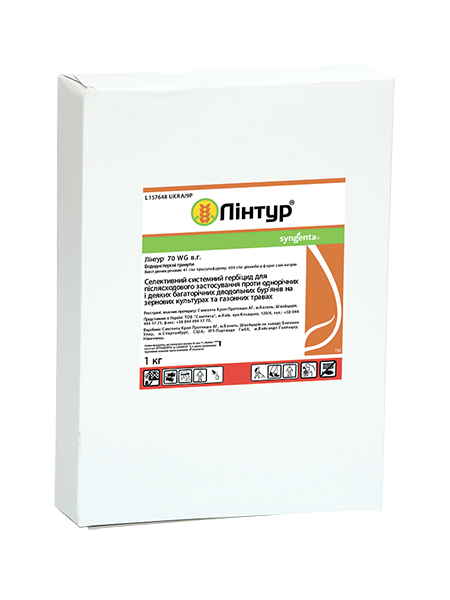

Потужна і швидка дія проти бур'янів
паспорт препарату
Лінтур® 70 WG, в. г.
41 г/кг триасульфурону, 659 г/кг дикамби у формі солі натрію
Сульфонілсечовини, похідні бензойної кислоти
Вододисперсні гранули
Класифікація ВООЗ: III
1 кг
Фото упаковки

головні переваги препарату
- Контроль широкого спектра однорічних і багаторічних дводольних бур’янів, у тому числі стійких до 2,4–Д
- Знищує надземну частину і кореневища багаторічних бур'янів
- Діє швидше й ефективніше за рахунок поєднання двох діючих речовин
- Не має обмежень для наступних культур у сівозміні
- Стандарт у захисті газонних трав від комплексу дводольних бур’янів
ПШЕНИЦЯ ОЗИМА
Спектр дії
Фаза внесення
Норма витрати, кг/га
Кратність обробок / Термін очікування
ЯЧМІНЬ ЯРИЙ
Спектр дії
Фаза внесення
Норма витрати, кг/га
Кратність обробок / Термін очікування
ГАЗОННІ ТРАВИ
Спектр дії
Фаза внесення
Норма витрати, кг/га
Кратність обробок / Термін очікування
Сумісність
Лінтур® можна змішувати з іншими загальновживаними пестицидами на відповідних культурах.
Не рекомендується змішувати з регуляторами росту.
При використанні бакових сумішей пестицидів слід дотримуватись рекомендацій компанії-виробника щодо сумісності кожного препарату-компонента бакової суміші.
особливості застосування
Уникати застосовувати препарат одразу після заморозків або в очікуванні заморозків у ніч після обробки. Не застосовувати препарат на посівах, які перебувають у стресовому стані (наприклад, під час посухи, надмірного зволоження ґрунту, при пошкодженні приморозками, шкідниками, хворобами тощо).
Температура застосування
Оптимальна температура застосування — від +10 °С до +25 °С.
Рекомендована норма витрати робочого розчину
150–200 кг/га.